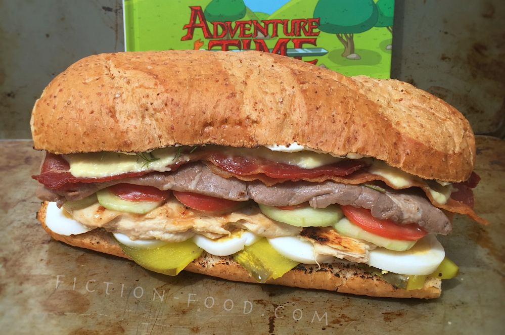

Jake's Greatest Sandwich Recipe from "Adventure Time"

Description
Adventure Time’s plotlines, followed by the addition of boiled eggs, cucumber, tomato, and onion for a burst of freshness. A hint of salt, or “tears,” brings depth to the ensemble, marrying the flavors in a symphony as harmonious as Marceline’s melodies. The final touch of crispy bacon and the luxurious lobster soul elevates this sandwich from mere food to a tribute to the spirit of Adventure Time, promising a taste adventure that’s as bold and heroic as Finn and Jake’s escapades. This creation isn’t just a meal; it’s a homage to the heart of Ooo, ready to dazzle your taste buds and fend off any mundane mealtime.
Ingredients
- Sub Roll, sliced lengthwise & insides toasted over open flame
- Cream Cheese, softened
- Long, Sandwich Sliced Pickles, patted with paper towels (I used dill. If you can find an "artisanal" pickle, go for it)
- Fresh Dill
- 2 Hardboiled Eggs, sliced into circles
- 1 Boneless, Skinless Chicken Breast
- Common Cucumber, thinly sliced into circles
- 1-2 Roma Tomatoes, thinly sliced into circles
- Small Sweet Yellow Onion, thinly sliced into circles
- Sprinkling of Salt
- 3-5 Pieces of Bacon, pre-cooked
Lobster Aioli
- ~1/3 Cup Cooked Lobster
- 2 Tbsp. Mayonnaise
- 2 tsp. Minced Garlic
- 1 tsp. Lemon Juice
- 1/4 Cup Olive Oil/Canola Oil
Sous Vide
- 1 Long, Thin Steak
- Fresh Rosemary and Thyme
Steps
- Moderately sprinkle both sides of the steak with salt & then wrap in a few paper towels. Let it sit on a plate for about 30 minutes so the towels can soak up some of the juices.
- Lobster Aioli (AKA Lobster Soul): Put all of the ingredients in a food processor or blender & pulse until fully combined, smooth, & creamy. Refrigerate until ready to use.
- Slice your sub roll in half lengthwise. If you have an electric stove, place the 2 halves face up on a baking sheet & broil for about a minute or until the tops are toasted. If you have a gas stove, skewer the slices with a fork, one at a time, & toast the cut sides over an open flame (be careful!). This is all in lieu of having a kitchen torch, so if you have one of those, go for it.
- Chicken (AKA Bird from the Window): Slice your chicken breast in half lengthwise so you have 2 thin pieces. Sprinkle with a little salt & pepper or a seasoning of your choice & cook via the method you prefer; sauté with a little oil, about 1 1/2-2 minutes per side, bake at 375ºF for about 10 minutes, or I used our little George Forman grill & cooked it for about 2-3 minutes (1 piece at a time). Once finished, set aside on a plate.
- Sous-vide: Unwrap the steak & place it in a large freezer bag. Place a sprig of rosemary & a sprig of thyme on both sides of the meat & then seal the bag, leaving a small opening. Suck as much air out of the bag as you can (don't pass out!) & quickly seal it. Fill your rice cooker a little over half full with very hot water & then turn it on to the cook setting. Lower the bag of meat into the water, keeping the top of the bag out of the water as well as you can. Put the thermometer into the water & read the temperature. Once the temperature reaches 135ºF remove the thermometer, close the lid, & turn the cook setting to "keep warm" or whatever the equivalent is on your cooker. If using rouladen, let sit for 6 minutes if it's an 1/8" thickness, or 8 minutes if it's 1/4" thickness. Once the time is up, remove the bag from the water (careful, it's hot!) & pull out the steak. If you'd like to sear it, put a little oil in a pan over high heat, & once it sizzles, cook the meat for about 20-30 seconds per side. Place the steak with the chicken until ready to use.
- Building the Sandwich: Lay your sub roll halves face/toasted side up & spread with soft cream cheese. On the half that will be the top, sprinkle several pieces of fresh dill. On the other half, lay 3 pickle slices diagonally (or however many cover the bread). On top of the pickles lay the sliced eggs in 2 parallel rows. Place one of the chicken breasts on top of the eggs & then cut the other breast to into pieces that will fit & cover the rest of the length of the sandwich. Next, place the cucumber slices in 2 parallel rows, topped next by 2 rows of tomato slices. Top the tomatoes with 3 or so round slices of onion & then sprinkle on a little salt. Lay the steak on next, & then place the bacon pieces on longways, over lapping them. Lastly, generously spoon on some of the aioli & spread it out just a little bit. Close the sandwich & marvel at its awesomeness, but eat it quick before Magic Man gets his hands on it!
Want to check out the other recipes? Click here